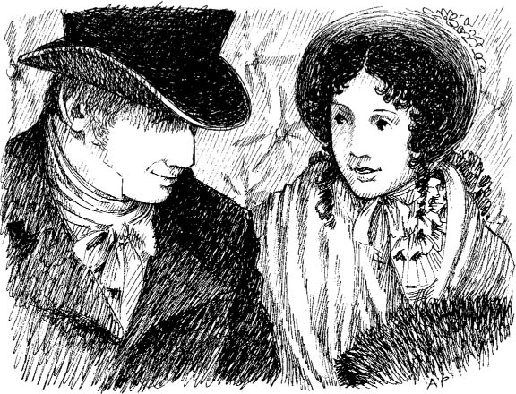
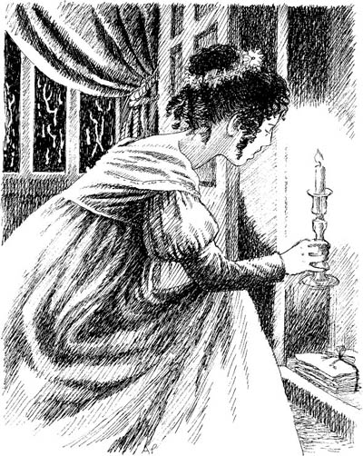

Listen to Part 1:

Tu viện Northanger

Cỗ xe ngựa tới Tu viện Northanger. Henry Tilney trò chuyện cùng Catherine.
‘Em gái tôi rất mừng’, Henry nói. ‘Nó thường sống một mình ở tu viện. Giờ thì cô sẽ ở đó cùng nó’.
‘Nhưng không phải anh cũng ở đó hay sao?’, Catherine hỏi.
‘Không,’ Henry đáp. ‘Tôi không ở đó thường xuyên. Nhà tôi ở Woodston, cách Northanger 20 dặm. Tôi là mục sư ở Woodston.’
‘Hãy kể cho tôi nghe về Tu viện Northanger!’, Catherine đề nghị. ‘Tôi vẫn thường đọc về những tu viện. Chúng luôn là những ngôi nhà cổ, với nhiều phòng lớn và tối.’
‘Và sẽ có một chiếc tủ lớn trong phòng của cô,’ Henry nói. ‘Cô sẽ thử mở nó. Rồi nến của cô sẽ tắt ngúm! Và cô sẽ ở một mình trong bóng tối!’ Henry đang cười.
Listen to Part 2:
‘Ồ, xin đừng dọa tôi, thưa anh Tilney!’, Catherine thốt lên.

Đó là một chuyến đi vui vẻ. Họ nhanh chóng tới được Tu viện Northanger.
Catherine bước vào tu viện. Eleanor dẫn cô lên phòng. Cuối cùng, Catherine cũng tới phòng ngủ của mình.
‘Bữa tối sẽ được dọn lúc năm giờ,’ Eleanor báo. ‘Tôi sẽ lên gọi cô lúc đó’.
Phòng ăn rất lớn và thức ăn rất ngon. Tướng Tilney mỉm cười và mọi thứ đều tốt đẹp. Catherine và gia đình Tilney có một buổi tối vui vẻ.
Lúc mười giờ, Catherine về phòng ngủ. Đêm đó có bão. Mưa to và gió lớn.
Catherine nhìn quanh phòng mình. Đây là một căn phòng đẹp. Cô mỉm cười.
‘Tôi thích nơi này,’ Catherine tự nhủ. ‘Nó không giống như những tu viện đáng sợ. Trong truyện kinh dị, các cô gái ngủ trong những căn phòng lạnh lẽo và tối tăm. Nhưng đây là một căn phòng đẹp. Tôi sẽ xem hết mọi thứ trước khi đi ngủ.’
Listen to Part 3:
Có một chiếc tủ đen cũ ở góc phòng. Catherine nhớ lại lời của Henry. Có một chiếc chìa khóa trên cửa tủ và Catherine đã tra vào. Ban đầu, cửa tủ không mở. Cô lại tra chìa khóa thêm lần nữa.
Ngay lập tức, cửa tủ bật mở. Catherine nhìn vào bên trong. Chiếc tủ có trống không? Không hẳn! Có một vài tờ giấy ở góc tủ! Liệu đó có phải những tờ giấy bí mật không?

Ngay lúc đó, nến của Catherine tắt ngúm. Mưa đập dữ dội vào cửa sổ. Gió rít lên đáng sợ. Catherine nhớ lại những câu chuyện kinh dị về những tu viện cổ. Cô rất sợ. Liệu có ai đó ở ngoài cửa phòng cô không? Hay có ai đang mở cửa sổ?
Catherine chui lên giường. Cô trùm chăn che kín đầu. Cô muốn xem những gì viết trên tờ giấy trong tủ. Nhưng cô rất sợ. Có tờ giấy nào ghi chép về một cái chết khủng khiếp nào đó - một vụ giết người không? Có tờ giấy nào ghi về kim cương hay kho báu gì đó không?
‘Mình sẽ xem vào buổi sáng,’ Catherine tự nhủ. Cuối cùng cô cũng ngủ thiếp đi.
Sáng hôm sau, Catherine thức dậy và nhanh chóng ra khỏi giường. Cô chạy đến chiếc tủ. Cô rất háo hức! Cô sẽ biết được bí mật kinh hoàng của Tu viện Northanger!
Catherine cầm một tờ giấy lên và nhìn vào.
‘Áo sơ-mi. Tất. Ga giường,’ cô đọc. Cô nhặt tờ giấy khác. ‘Ba chiếc áo sơ-mi trắng và hai chiếc quần dài.’
Listen to Part 4:
Không có bí mật kinh hoàng nào cả! Không có đồ trang sức nào cả! Các tờ giấy chỉ là danh sách đồ giặt!
‘Mình thật ngốc,’ Catherine tự nhủ. ‘Mình đã đọc quá nhiều truyện kinh dị. Mình không thể kể với Henry về danh sách đồ giặt này được. Anh ấy sẽ cười vào mặt mình.’
Catherine xuống cầu thang để ăn sáng.
Mục lục
- Trang tiêu đề
- Trang bản quyền
- Nội dung
- Ghi chú về tác giả
- Ghi chú về câu chuyện này
- Nhân vật trong câu chuyện này
- 1 Catherine đến Bath
- 2 Những người bạn mới của Catherine
- 3 John và James
- 4 Một buổi dạ hội tại Upper Rooms
- 5 ‘Sao anh lại nói dối tôi?’
- 6 Catherine và gia đình Tilney
- 7 Isabella đang yêu
- 8 Đội trưởng Frederick Tilney
- 9 Isabella và James
- 10 Tu viện Northanger
- 11 ‘Người bạn thân mến của tôi, cô Morland!’
- 12 Một chuyến thăm đến Woodston
- 13 Một lá thư từ Isabella
- 14 Catherine trở về nhà
- 15 ‘Cô sẽ lấy tôi chứ?’